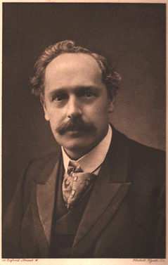

Home
IT seems rather of necessity than predilection in the sense of apologia that I should put on record in the first place a plain statement of my personal position, as one who for many years of literary life has been, subject to his spiritual and other limitations, an exponent of the higher mystic schools. It will be thought that I am acting strangely in concerning myself at this day with what appears at first sight and simply a well-known method of fortune-telling. Now, the opinions of Mr. Smith, even in the literary reviews, are of no importance unless they happen to agree with our own, but in order to sanctify this doctrine we must take care that our opinions, and the subjects out of which they arise, are concerned only with the highest. Yet it is just this which may seem doubtful, in the present instance, not only to Mr. Smith, whom I respect within the proper measures of detachment, but to some of more real consequence, seeing that their dedications are mine. To these and to any I would say that after the most illuminated Frater Christian Rosy Cross had beheld the Chemical Marriage in the Secret Palace of Transmutation, his story breaks off abruptly, with an intimation that he expected next morning to be door-keeper. After the same manner, it happens more often than might seem likely that those who have seen the King of Heaven through the most clearest veils of the sacraments are those who assume thereafter the humblest offices of all about the House of God. By such simple devices also are the Adepts and Great Masters in the secret orders distinguished from the cohort of Neophytes as servi servorum mysterii.
As you can see from the above, Arthur Edward Waite was a bit pompous. This quote from the preface of "The Pictorial Key to the Tarot", however, is a snapshot of the attitudes amongst the occult community at the time it was published - 1911. In a word: elitist. This is the trap of all gnostics. As soon as you believe that you have special knowledge, that you are one of the elect, you tend to feel that you are somehow superior than the average person. The occult renaissance that started in the Victorian era was no different. It too was a form of gnosticism that found expression in the form of mediums, psychics, spiritualists, and, of course, "secret societies".
A number of these secret societies are still in existence in some (or many) forms: The Knights Templar (not the real knights), the Rosicrucians, the Free Masons (which predate the Victorian era), Golden Dawn (to which Waite belonged), and many other lesser lights. One of the major aspects of these societies is the "secret" part. You are not supposed to go around blabbing these secrets to all and sundry. This is a particular burden to larger egos that crave attention and desperately need validation. This led to a large number of books being written in couched terms — deceptive and misleading to those who did not have sufficiently gnostic vocabulary to interpret the meaning. Waite was a virtuoso of this art. He was also a virtuoso of self promotion. While he was an editor of a magazine, he once wrote a scathing review of a book by an author going under the pen name "Grand Orient". That author was Waite himself, and he had not yet begun to write the book. He knew that controversy breeds curiosity — he was engaging in the click-bait of his day.
Tarot Cards
One of the biggest money draws then, as now, amongst the mystic crowd is Tarot cards. Second only to crystal balls, Tarot cards are the most recognizable prop of mystics and fortune tellers. They are also widely used in the western hermetic tradition (the occult secret societies) as an initiation into "the mysteries". The trump cards, referred to as the "Major Arcana", in particular, have an underlying philosophy.
Shortly after the turn of the century, Waite hired Pamela Coleman Smith to illustrate his "rectified Tarot". This was published in 1911 along with the book "The Pictorial Key to the Tarot". His design captured the attention and cash of many. Today this design is what comes to mind when people think of Tarot cards. Waite was a truly brilliant man. His design is symbolically rich and tells a progressive narrative to those who have the necessary vocabulary to understand.
Religion and Philosophy
Gnosticism and the societies, cults, etc. that form around gnosticism is always based on religion. The western hermetic tradition is Christian first and foremost, with the addition of snippets from other religions and traditions thrown in. In this case Kabalah, Platonism, and some Buddhism. Waite's narrative in the Major Arcana is a tale of reincarnation and salvation. People are trapped in a vicious cycle of reincarnation that has to be broken out of by actively seeking God. His Major Arcana is made of three sections which I refer to in the Greek terms as the Soma, the Psyche, and the Pneuma.
Soma
The soma is the vessel of the soul. This differs from merely flesh (sarx in Greek terms) in that it also encompasses our day to day interactions with world in intellectual as well as purely animalistic terms. It refers to our struggles and endeavours in the material world. There is a odd man out sort of card — The Fool. It is numbered zero, and I have arbitrarily placed it in the soma division. Waite actually has it positioned between the 20th and 21st cards. I will not get into why this is here. I have included it for completeness sakes.
Psyche
The Psyche is the mind. This section of cards represents our internal struggles and endeavours. It is the struggles we have with ourselves and with the attitudes espoused by socitey.
Pneuma
The Pneuma is the soul. It is the portion of ourselves that moves from life to death and back to life. The "Great Work" of the occultist is to awaken the soul and have it find a path to God and ultimately, out of the vicious cycle of life and death.
Structure of the Divisions
Each section of seven cards is made up of:
Each of these cards has a figure with a halo. These halos are not the traditional halos: there are two lemiscates and a pentagram.
Two archetypal figures and a conceptualization.
These cards provide advice or observations about the path being taken.
Having gone along the path, you must make the correct choice to get to the end. Wrong choices have consequences that also indicated in later cards.
This is the result of having successfully navigated the path.
Structure of this website
There are three index sections, Soma, Psyche, and Pneuma which list the cards in the division along with a keyword, a word or phrase that sums up the cards role in the overall narrative. Each card has a page which begins with a picture of the original 1911 card, and Waite's description of that card. Below that is my comments on the symbolism of the card and how it fits into the overall narrative. At the bottom of every page is a "previous" and "next" link that allows you to flip through the site as though you are reading a book.